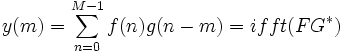
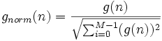

Schneller Algorithmus für die Korrelation
Die Korrelation wird mit Hilfe eines schnellen Algorithmus' berechnet, der auf dem Korrelationstheorem basiert.
Angenommen f(n) und g(n) sind die Eingabesignale und y(m) bezeichnet die Ausgabe, dann haben wir:
 und 
wobei Fnorm die Fourier-Transformation von fnorm(n) und Gnorm die Fourier-Transformation von gnorm(n) ist und * die komplexe Konjugation bezeichnet.
Beachten Sie, dass bei der Berechnung der linearen Korrelation das Auffüllen mit Nullen vor der Berechnung der FFT stattfindet.
Automatische Berechnung des Abtastintervalls
Wenn <Auto> für das Abtastintervall ausgewählt wird, wird das in der Berechnung erforderliche Abtastintervall automatisch von Origin berechnet.
Das automatisch berechnete Abtastintervall ist das durchschnittliche Inkrement der Zeitsequenz, die normalerweise aus der X-Spalte kommt, die mit dem Eingabesignal verbunden ist. Gibt es keine verbundene X-Spalte, werden die Zeilennummern verwendet. Beachten Sie, dass das Abtastintervall auf 1 gesetzt wird, wenn Origin das durchschnittliche Inkrement nicht erhält.